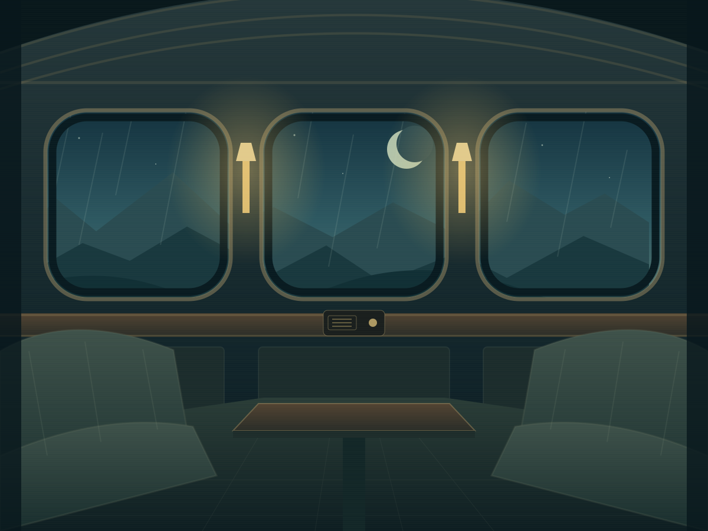

CHAPTER 01 · THE PHOTOGRAPH
Everyone has a past.
Yours is on this train.
A little mystery.
A choice that stays with you.

CARRIAGE 07SOMEWHERE BEFORE DAYLIGHT
The observation carLook closer. Some things are waiting to be found.
01 / 03YOUR STORYPLAYABLE PROTOTYPE
✧
The journeySomewhere between here and home
EVERY STORY STARTS WITH A SMALL CHOICE
Your progress stays with you.
IN YOUR POCKETA one-way ticket. A feeling you have been here before.A short story about trust & remembering